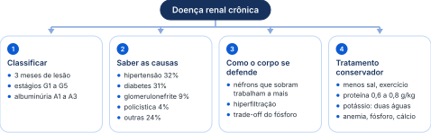
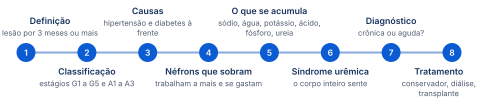
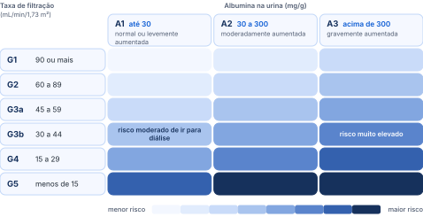
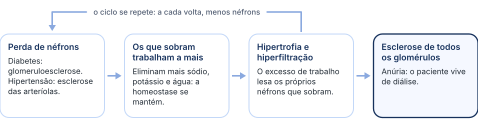
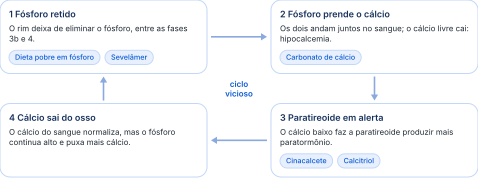
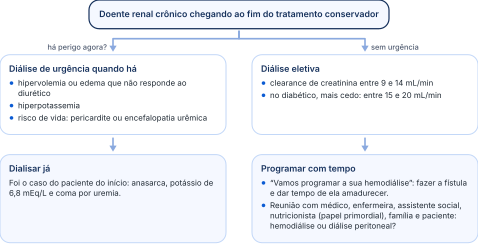

Tempo
O diagnóstico só se fecha depois de 90 dias.
Quando o rim perde função devagar, o corpo inteiro sente: como reconhecer, classificar e adiar ao máximo a diálise.
Organizada a partir da aula, com a linguagem ajustada para o estudo. A legenda de cores está na página 2.

As quatro frentes que a professora pediu para guardar; a terceira é “o grande pulo do gato”.
“Se fosse só para mandar slide, eu não precisava estar aqui; eu mandava os slides e ficava na minha casa. Então a presença na aula faz diferença.”

É quando o rim está lesado há pelo menos três meses, mesmo que o exame de sangue ainda pareça normal. Ela anda devagar e em silêncio: o corpo se adapta, e muitas vezes o paciente só descobre quando o rim já quase parou.
Um caso real, de alguns anos atrás. Homem de 64 anos, com diabetes há 18 anos e hipertensão há 10, as duas tratadas de forma irregular na unidade básica de saúde. Parou o acompanhamento na pandemia, quando as unidades estavam lotadas de pacientes com covid-19, e estava havia mais de 3 anos sem exames de controle.
Chegou ao hospital pelo Serviço de Atendimento Móvel de Urgência, como vaga zero, depois de um rebaixamento do nível de consciência por crise hipertensiva, e foi direto para a unidade de terapia intensiva: já intubado, em ventilação mecânica e em anasarca (edema no corpo todo). A sonda vesical não drenou nada, e a anúria se manteve na reavaliação após 4 horas.
Uremia, potássio alto e acidose metabólica num diabético e hipertenso sem acompanhamento: é o quadro clássico de doença renal crônica causada por diabetes e hipertensão. O caso volta nos capítulos 04 e 10.
A doença renal crônica é uma síndrome de perda lenta e progressiva da função dos rins, que leva a sinais e sintomas da incapacidade de manter a homeostase (o equilíbrio do corpo). Lenta e progressiva é o que a separa da doença renal aguda, em que a perda é abrupta. Nos casos avançados, os rins ficam esbranquiçados e pálidos.
Só é renal crônico quem tem lesão renal por 3 meses ou mais, com ou sem diminuição da taxa de filtração glomerular.
O diagnóstico só se fecha depois de 90 dias.
Pode estar normal: a creatinina não precisa estar alterada.
Alteração na biópsia, nos exames de sangue e urina ou no exame de imagem.
“Aqui tá o grande pulo do gato da doença renal crônica. Se vocês guardarem isso na cabeça, vocês entendem a doença e todos os sintomas dela.”
O normal é ter dois rins, de tamanho normal e com a pelve renal normal. Se o exame mostra alguma alteração estrutural do rim, o paciente já é renal crônico, ainda que com função normal. Três exemplos da aula:
A simples presença dos cistos já pode fazer do paciente um renal crônico.
Não é o normal. Ter um rim só já é ser renal crônico.
Hematúria microscópica, mesmo com rim e creatinina normais.
A nefropatia por imunoglobulina A (doença de Berger, vista nas glomerulopatias com o Dr. Guilherme Ahn) evolui muito devagar, em 20 a 25 anos. O rim tem tamanho normal, quase sempre não há proteinúria, a urina não tem espuma e o paciente não tem sintomas. Ainda assim, a hematúria microscópica basta: qualquer alteração renal por mais de 3 meses é doença renal crônica.
Esperar a creatinina subir para chamar de doença renal crônica. Não é só a disfunção que dá o diagnóstico: alteração estrutural (cistos, rim único) ou na urina (hematúria) por mais de 3 meses já basta.
A doença renal crônica pode receber uma lesão aguda por cima. É relativamente comum com remédios tóxicos para o rim (tema da aula da Dra. Nandressa Riso), contraste ou infecção. Exemplo da aula: paciente em estágio 2 tem uma infecção de garganta que vira pneumonia, interna, recebe medicação em dose alta e faz uma angiotomografia de tórax para afastar tromboembolismo pulmonar. A função piora.
Na fase aguda não dá para dizer se ele mudou de estágio. É preciso esperar a infecção ser tratada e o contraste ser eliminado, dando tempo para os túbulos se recuperarem, e só depois de no mínimo 3 meses ver o que sobrou. Exemplo: creatinina de base de 1,4 a 1,5 (taxa de filtração em torno de 65) sobe para 4 na internação e, com a recuperação, volta para 1,5 ou 1,6. Aí se reclassifica.
Mudar o estágio do paciente durante a internação. A classificação só muda depois de 90 dias, com a parte aguda já recuperada. É por isso que a definição exige 3 meses.
A doença renal crônica é graduada de dois jeitos: pelo quanto o rim ainda filtra (estágios G1 a G5) e pelo quanto de albumina escapa na urina (A1 a A3). Juntos, eles dizem o risco de o paciente chegar à diálise.
Serve para todo médico, não só para o nefrologista: ortopedista, cirurgião geral, clínico, ginecologista. Em qualquer laudo de paciente com alteração da função renal, o juiz vai perguntar qual é o grau da disfunção, e advogado e juiz conhecem essa classificação. O mínimo é saber que são 5 graus.
Para guardar: começa no 90 e vai baixando aos poucos, 90, 60, 45, 30, 15. O estágio 3 foi dividido em dois, 3a e 3b.
Dar laudo de aposentadoria em qualquer estágio. A princípio, aposenta só o paciente em estágio 5. O paciente do posto com cálculo renal e muita cólica que quer se aposentar, com filtração de estágio 3b, não tem direito. E não é preciso mandar ao nefrologista: o próprio médico faz o laudo.
A outra classificação usa a albumina na urina (albuminúria). A presença de albumina na urina é sinal de gravidade, de lesão de órgão-alvo, e a cardiologia usa muito essa classificação para prescrever alguns remédios.
Guardem o 30 em 2026: provavelmente até 2028 esse corte vai diminuir. Por enquanto, ainda é 30.
Qualquer estágio de filtração, até o G1, pode ter albuminúria. Cruzando as duas classificações, quanto mais para baixo (menos filtração) e mais para a direita (mais albumina), maior o risco de chegar à doença renal crônica terminal. A proteína perdida na urina é basicamente albumina: quase 70% de toda a proteína eliminada.

Esquema da regra dada em aula: o tom fica mais escuro para baixo e para a direita.
É nas duas frentes, melhorar a filtração e reduzir a albuminúria, que agem as quatro classes que hoje formam o quarteto fantástico da nefrologia (como o da cardiologia), usadas para evitar a piora para G4, G5 e A3.
Cada vez mais brasileiros chegam à diálise, e quase dois terços deles por causa de pressão alta e diabetes. Tratar bem essas duas doenças é o melhor jeito de evitar a doença renal crônica.
A doença renal crônica tem tratamento caro. Por isso a meta é evitar que o doente cronifique e chegue ao estágio 5, com necessidade de diálise. Os números da Sociedade Brasileira de Nefrologia:
Em média, são 21 mil casos novos de pacientes em diálise por ano no Brasil, um aumento de 6% na última década.
Pelo Censo de 2020 da Sociedade Brasileira de Nefrologia, hipertensão e diabetes já praticamente se equivalem como causa:
Quando parte dos filtros do rim morre, os que sobram passam a trabalhar dobrado para manter o corpo em equilíbrio. Isso segura o paciente por anos, mas o excesso de trabalho também gasta esses filtros, até não sobrar nenhum.
Cada rim tem cerca de 1 milhão de néfrons. O diabetes os destrói por glomeruloesclerose (a lesão de Kimmelstiel-Wilson), e a hipertensão, por esclerose das arteríolas. Os néfrons que sobram se adaptam para manter a homeostase: passam a eliminar mais potássio, mais sódio e mais água. É isso que mantém a vida do paciente mesmo com a função reduzida.
O preço vem depois: os néfrons que trabalham a mais “reclamam”. A hipertrofia e a hiperfiltração lesam os próprios néfrons que sobram e perpetuam a lesão, até a esclerose de todos os glomérulos. Por isso os pacientes da hemodiálise vivem em anúria: a grande maioria não urina nada, porque não há mais néfron produzindo urina.

Nos três anos sem acompanhamento, os néfrons que sobravam trabalharam a mais para dar conta. Se a taxa de filtração tivesse sido acompanhada, ele provavelmente estaria num estágio 2 ou 3a e, com o tratamento irregular, foi passando por 3b, 4 e 5 até chegar à diálise de urgência.
“A doença renal é inexoravelmente progressiva.”
Em algum momento da vida, o doente renal vai chegar à fase 5. O trabalho do médico é adiar isso ao máximo com o tratamento conservador, antes que ele precise de diálise.
“Eu tenho uma paciente que eu acompanho há 12 anos em fase 4 e ela está fora de diálise. Ela faz exercício, ela faz dieta, ela toma medicação, ela toma 3 litros de água por dia e, todo ano, a gente brinca: ‘Mais um ano que nós demos conta de você fora do serviço de diálise’. E é essa a nossa função como médicos.”
Com poucos néfrons, o rim não dá conta de jogar fora o sal, a água, o potássio, o ácido e a ureia. Tudo isso se acumula no sangue e explica o inchaço, a pressão alta, o potássio alto e o mal-estar do renal crônico.
A ureia (vista na primeira aula, junto com a amônia) não é eliminada por completo e vai se depositando no sangue. É esse excesso que dá os sintomas da uremia. O ácido úrico, também eliminado pelo rim, se acumula (hiperuricemia). E outros solutos de eliminação renal pesam nos sintomas: guanidinas, mio-inositol, beta-2 microglobulina e fator de necrose tumoral, entre outros.
Valor normal. O paciente do caso tinha 293.
Pense da fase 1 à fase 5: no começo, os néfrons que sobram compensam; no fim, são poucos e não conseguem mais.
O banho de diálise mostrado na aula prática é rico em bicarbonato exatamente para compensar a acidose do renal crônico.
Achar que antes do estágio 5 não existe hipercalemia. Existe, só que menos, porque ainda há néfrons para eliminar. Sem remédio nenhum, em tese, o rim daria conta até a fase 4. Mas quase todos usam inibidor da enzima conversora, bloqueador do receptor de angiotensina, espironolactona ou finerenona, que fazem reter potássio. Prescreveu, acompanhe: não dá para mandar o paciente voltar daqui a 90 dias.
Ao prescrever para o renal crônico, pense ao mesmo tempo na proteção do rim (contra a hiperfiltração) e na hiperpotassemia.
A creatinina é muito fiel à função renal: quase não é secretada, então praticamente tudo o que chega ao rim é eliminado. A cistatina C não é reabsorvida nem secretada, por isso é um parâmetro um pouco mais fiel.
A taxa de filtração glomerular, ou clearance de creatinina (para efeito prático, a mesma coisa), é, a grosso modo, a porcentagem de rim que funciona. A fórmula de Cockcroft-Gault é de uso corrente à beira do leito e não exige prática: só conta de menos, de vezes e de dividir. O residente é obrigado a saber.
Clearance de creatinina (mL/min) = (140 − idade) × peso em kg ÷ (72 × creatinina em mg/dL)
Multiplique o resultado por 0,85: a massa muscular é um pouco menor.
Quem souber a própria creatinina pode fazer a conta de si mesmo.
Exemplo de conta. Mulher de 25 anos, 60 kg, creatinina 0,8 mg/dL: (140 − 25) × 60 ÷ (72 × 0,8) = 6.900 ÷ 57,6 ≈ 120; vezes 0,85 ≈ 102 mL/min.
Outra fórmula muito usada é a CKD-EPI, sigla em inglês do grupo de estudo que a criou (Chronic Kidney Disease Epidemiology Collaboration). A versão atual, de 2021 (com um pequeno ajuste em 2023), usa três dados: creatinina, idade e sexo; a anterior também usava a raça, que foi excluída. Está em qualquer aplicativo de cálculo médico, como o MedCalc, e resolve rápido a dúvida sobre o estágio do paciente.
O rim doente não consegue jogar fora o fósforo. O fósforo que sobra prende o cálcio do sangue, e o corpo, para repor esse cálcio, passa a tirá-lo dos ossos. O resultado são ossos fracos e cálcio depositado nas artérias.
Só duas especialidades lembram que o fósforo existe: a nefrologia e a nutrologia. E é dele que começa um dos maiores problemas do renal crônico, a osteodistrofia renal, por um mecanismo chamado trade-off (troca: o corpo corrige uma coisa pagando com outra).
Entre a fase 3b e a fase 4, o rim deixa de eliminar o fósforo. O fósforo é o melhor amigo do cálcio: os dois andam juntos no sangue, como fosfato de cálcio, e juntos são eliminados pelo intestino, nas fezes. Com o fósforo sobrando, o cálcio circulante livre cai (hipocalcemia). O cálcio baixo estimula a paratireoide, vizinha da tireoide, a produzir mais paratormônio, que tira cálcio dos ossos. O cálcio do sangue normaliza, mas o rim continua sem eliminar o fósforo, que puxa mais cálcio. É um círculo vicioso.

Uma aluna fez o fósforo, um aluno fez o cálcio (o maior, porque há mais cálcio que fósforo no sangue) e a professora fez a paratireoide. O fósforo, sobrando no sangue, puxa o cálcio para o seu lado. A paratireoide olha o sangue, não acha o cálcio e vai buscar no osso: “Me dá cálcio!”. O cálcio do sangue normaliza, mas o fósforo continua lá, querendo mais cálcio, e o ciclo continua.
“Esse nó é causa de debates homéricos em congresso. Não é só sua dúvida, é dúvida de todo mundo.”
Dizer que o renal crônico tem cálcio alto porque o paratormônio tira cálcio do osso. O motor é o fósforo alto, que derruba o cálcio: o quadro típico é hiperfosfatemia com hipocalcemia. O paratormônio só traz o cálcio de volta ao normal, à custa do osso.
E há outros fatores, como o fator de crescimento de fibroblastos 23, que também mudam a evolução da osteodistrofia renal; a aula ficou em cálcio, fósforo e paratormônio.
“Eu tô gostando de tirar cálcio do osso! Eu sou paga pra tirar cálcio do osso, é pra isso que eu sirvo.”
Abaixo de 20, repor: primeiro o calcitriol e, se a vitamina D não normalizar, a vitamina D também.
No renal crônico entra o detalhe do fósforo, que o hepatopata e o cardiopata não têm. Por isso é preciso fazer as duas coisas ao mesmo tempo: compensar com calcitriol e, se preciso, repor a vitamina D.
As toxinas que o rim não elimina se espalham e afetam o corpo todo: estômago, pulmão, cérebro, nervos, pele, ossos, sangue e defesas. A doença aparece no rim, mas é de todos os órgãos.
O conjunto desses sinais e sintomas pelo organismo inteiro é a síndrome urêmica.
Tratar com diurético o líquido no pulmão da fase 5. Quase não há néfron para responder ao diurético. O doente com líquido no pulmão nessa fase precisa de diálise para tirar o líquido.
Tem cerca de 40% de chance de morrer de doença cardiovascular, muito acima da população geral: mais acidente vascular cerebral, mais infarto. A calcifilaxia é uma das causas.
O cálcio explica parte desse risco. O corpo precisa manter o cálcio do sangue normal, porque ele participa de várias vias, como a cardíaca e a neurológica; para isso, tira cálcio do osso, e esse cálcio nem sempre volta para o osso: deposita-se nos vasos e aumenta o risco de infarto e de angina. Não deixar o paciente chegar à fase 5 é a meta.
“Já conseguiram entender, só nos sinais e sintomas, por que a gente tem que tratar bem diabético, tratar bem hipertenso para que eles não cheguem à doença renal crônica? Porque ela é uma doença multissistêmica. É uma doença que aparece no rim, mas afeta todos os órgãos que a gente tem. Então, se nós pudermos evitar que isto aconteça, excelente.”
Para pensar em doença renal crônica, lembre das causas, examine o paciente e peça um conjunto básico de exames. Diante de um rim que parou, alguns sinais contam se ele está parando agora ou se vem parando há anos.
Hipertensão, infecção do trato urinário, cálculo renal (litíase), diabetes, doenças congênitas, drogas que sabidamente alteram a função renal, doenças reumatológicas e vasculopatias. O uso crônico de anti-inflamatório piora a função renal; em aula, o efeito foi descrito como uma estenose da artéria renal.
Além dos sinais e sintomas do exame físico, este mínimo já permite o diagnóstico de disfunção renal:
Diante de um paciente como o do caso do início, alguns achados separam as duas:
Também conta a palidez palha: a cor amarelada da pele do renal crônico, porque a ureia, que dá a cor amarela à urina, se deposita no tecido subcutâneo. Já o exemplo da lesão aguda é quem até ontem urinava, caiu do telhado, fraturou o fêmur, sangrou muito na fratura e na cirurgia, fez choque hipovolêmico e hoje amanheceu anúrico na terapia intensiva. Nessa lesão aguda, a classificação é a KDIGO 1, 2 e 3 (da diretriz internacional de doença renal).
Uma lesão aguda sobre a crônica (por exemplo, sepse num renal crônico) mistura os achados, e a tabela deixa de ser tão rígida. Pense primeiro no que é fácil, crônica de um lado e aguda do outro, e trate a sobreposição como exceção.
Antes da diálise, o tratamento é feito com comida, hábitos e remédios, para o rim durar o máximo possível. Vale para os estágios 1 a 4, e a base dele é a alimentação.
O tratamento conservador contempla todos os estágios antes da diálise: 1, 2, 3 e 4.
Diminui a hiperfiltração, melhora a nutrição e preserva os glomérulos que sobram. De preferência, proteína de alto valor biológico.
O paciente não fica desnutrido: se preciso, suplementa-se com cetoácidos (aminoácidos). E ele pode e deve fazer exercício de força. O que é proteína de alto valor biológico fica para a próxima aula.
Diurético de alça ou tiazídico.
Uma das formas mais fáceis de tratar a hiperpotassemia é ensinar o paciente a cozinhar.
Mãe e avó não sabem nada de nefro, mas sabem de cuidado. Ao ferver legumes e verduras, o potássio passa para a água. Com frango (proteína), arroz (carboidrato), cenoura (vitamina) e um pouco de sal, a canja vira o melhor suplemento: água, sódio, potássio, proteína e carboidrato num prato só, junto com carinho. Pelo mesmo motivo se dá refrigerante de cola na diarreia: repõe o potássio, cuja falta dá muita fraqueza.
Dar sopa ao renal crônico. Ele não pode tomar sopa: é justamente o caldo que guarda o potássio que saiu dos legumes. Para ele, faz-se o contrário da avó, jogando a água fora.
O cozimento em duas águas vale para toda leguminosa ou verdura cozida: feijão, cenoura, beterraba, brócolis, couve-flor. Alface não dá para cozinhar, então verdura crua entra o mínimo possível. Nas frutas, laranja só meia; maçã, pera e banana podem ser cozidas em duas águas. Só com isso o potássio do alimento cai muito.
“A base do tratamento conservador do renal crônico é nutricional.”
Com eritropoetina subcutânea, que age por mais tempo; a endovenosa faz pico e cai. Dosar o ferro sérico e, se preciso, associar hidróxido de ferro, em geral na veia.
Dar ácido acetilsalicílico para proteger a fístula. Essa prática caiu por terra: só aumentou o sangramento da fístula e não resolveu os trombos.
Quando o rim chega ao fim, há duas saídas: a diálise, que limpa o sangue por fora do corpo ou pelo peritônio, e o transplante. O ideal é planejar a diálise com tempo; a urgência fica para quando o corpo já está em perigo.
A diálise começa quando o clearance de creatinina cai abaixo de 14 mL/min, qualquer valor abaixo de 14, sem precisar esperar chegar a 9. No diabético, começa mais cedo, com clearance entre 15 e 20: ele se beneficia do início precoce, até porque vive em hipoaldosteronismo e tende a ter o potássio mais alto.

A diálise peritoneal pode ser intermitente, ambulatorial contínua ou automatizada, esta feita só à noite, com uma máquina cicladora.
O transplante começou nos anos 1960 e se expandiu com os imunossupressores, principalmente a prednisona e a azatioprina, e muito mais depois de 1965, com a descoberta do sistema de antígenos leucocitários humanos, que mede a compatibilidade entre doador e receptor.
Existe ainda uma lista de prioridade. Têm prioridade quem já é transplantado de outro órgão e precisa de um novo e, no caso do rim, quem ficou sem acesso para diálise (sem lugar para fístula, sem veia para cateter, com fibrose do peritônio), porque sem o transplante esse paciente morre. Cada órgão tem seu roteiro de priorização; a grande maioria dos pacientes segue a tipagem ABO e de antígenos leucocitários.
O transplante preemptivo é feito na fase 5, antes de começar a diálise, com doador vivo ou falecido, e é permitido por lei. Por isso o paciente entra na fila já na passagem da fase 4 para a fase 5.
Doença renal crônica é lesão renal por 3 meses ou mais, com ou sem queda da filtração. Creatinina normal não afasta (rim único, policístico, imunoglobulina A com hematúria). Lesão aguda por cima: reclassificar só depois de 90 dias.
Estágios pela filtração (mL/min/1,73 m²): G1 90 ou mais · G2 60 a 89 · G3a 45 a 59 · G3b 30 a 44 · G4 15 a 29 · G5 menos de 15, diálise. Aposentadoria, a princípio, só no G5.
Albuminúria: A1 até 30 mg/g · A2 30 a 300 · A3 acima de 300. Quanto mais para baixo e para a direita na tabela, maior o risco.
Causas (Censo 2020): hipertensão 32%, diabetes 31%, glomerulonefrite crônica 9%, doença policística 4%, outras 24%.
Os néfrons que sobram trabalham a mais (eliminam mais sódio, potássio e água): a hipertrofia e a hiperfiltração mantêm a vida, mas perpetuam a lesão até a esclerose de todos os glomérulos e a anúria.
No início, natriurese e noctúria; no fim, edema e pressão alta. Potássio retido entre as fases 4 e 5. Acidose metabólica. Ureia normal: 10 a 40 mg/dL.
Trade-off: o fósforo retido prende o cálcio, a hipocalcemia ativa a paratireoide e o paratormônio tira cálcio do osso. Problemas: osso frágil, cálcio nas artérias, vitamina D pouco ativa.
Cockcroft-Gault: (140 − idade) × peso ÷ (72 × creatinina); mulher, vezes 0,85. CKD-EPI: creatinina, idade e sexo.
Na fase 5, em diálise, cerca de 40% de chance de morte cardiovascular. Síndrome urêmica: soluço, pernas inquietas, unhas meio a meio, anemia por falta de eritropoetina, plaquetas que não grudam.
Diante da anúria: anemia, fundo de olho alterado, cálcio baixo com fósforo alto e creatinina subindo devagar apontam para a doença crônica.
Tratamento conservador (estágios 1 a 4): menos sal, exercício de 30 minutos 5 vezes por semana, sem cigarro, anti-hipertensivo; proteína de 0,6 a 0,8 g/kg por dia; potássio: cozinhar em duas águas; eritropoetina subcutânea se hemoglobina abaixo de 10; carbonato de cálcio, sevelâmer, calcitriol e cinacalcete.
Diálise com clearance abaixo de 14 (diabético, 15 a 20); eletiva entre 9 e 14. Urgência: volume que não responde ao diurético, potássio alto, pericardite ou encefalopatia urêmica.